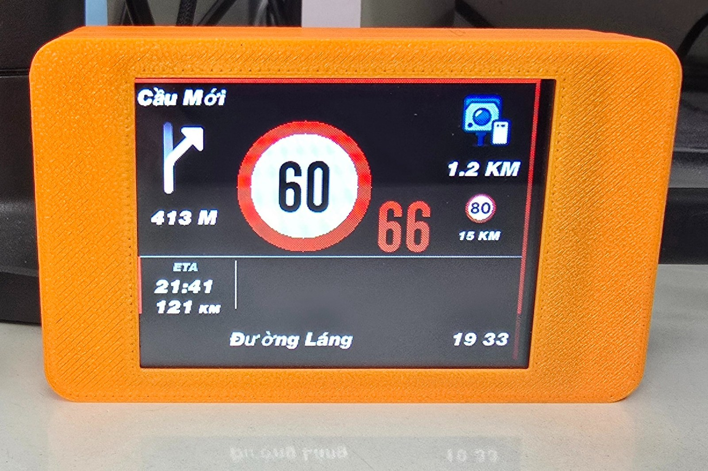
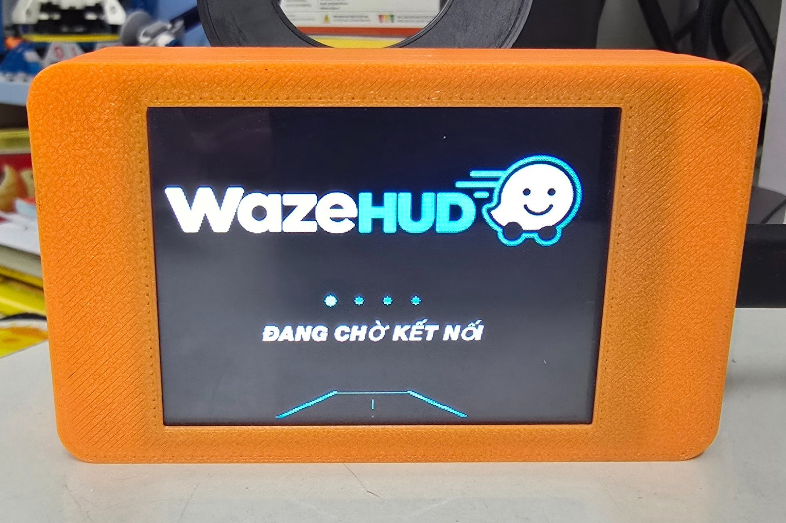
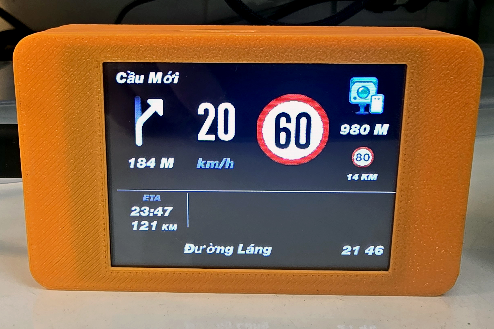
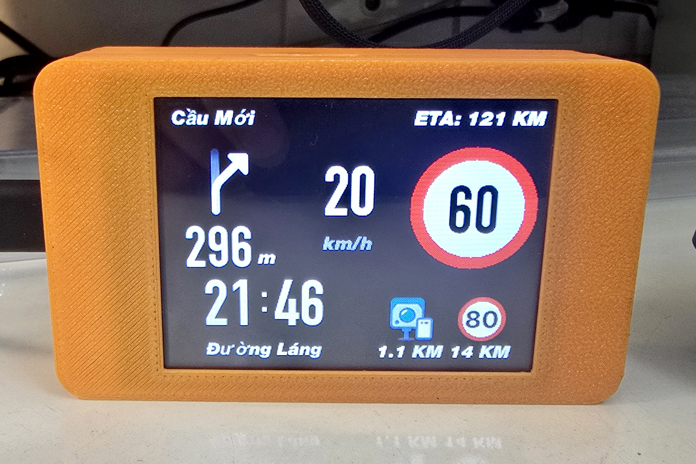
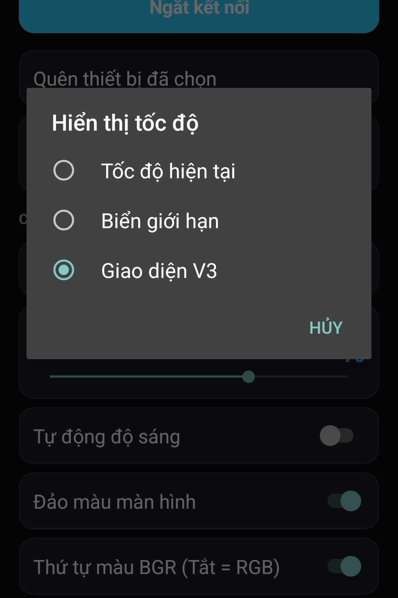

01
Tốc độ & giới hạn tốc độ
Đặt tốc độ hiện tại và biển giới hạn ở vị trí nổi bật, dễ nhận biết khi đang di chuyển.
72km/h
50
WazeHUD-CYD biến màn hình ESP32 CYD 2.8 inch thành màn hình hiển thị hành trình trực quan — tập trung vào tốc độ, giới hạn tốc độ và chỉ dẫn rẽ.

Thiết kế theo tinh thần HUD: ưu tiên thông tin quan trọng, tương phản cao và dễ quan sát trên màn hình nhỏ.
Đặt tốc độ hiện tại và biển giới hạn ở vị trí nổi bật, dễ nhận biết khi đang di chuyển.
Hướng rẽ và khoảng cách đến điểm rẽ được trình bày trực quan.
Thông tin làn đường và tên đường giúp bạn nắm bắt chỉ dẫn tiếp theo.
Hỗ trợ hiển thị các thông tin cảnh báo được firmware cung cấp, bao gồm tính năng cảnh báo đèn giao thông ở các bản tương ứng.
Chọn phong cách hiển thị phù hợp với nhu cầu và cách quan sát của bạn.
Firmware USB và Bluetooth BLE được phân loại riêng để người dùng chọn đúng bản.
Dự án phát triển nhiều kiểu bố cục HUD. Tên gọi và lựa chọn thực tế phụ thuộc phiên bản firmware bạn đang sử dụng.

Màn hình khởi động hiển thị khi thiết bị đang chờ kết nối với ứng dụng.

Giao diện dẫn đường với tốc độ hiện tại, giới hạn tốc độ, thông tin rẽ và cảnh báo phía trước.
Biển giới hạn tốc độ được làm nổi bật, đi kèm thông tin hành trình và cảnh báo.

Kết hợp hướng rẽ, tốc độ, biển giới hạn, tên đường và thông tin cảnh báo trong một bố cục.

Ảnh cài đặt cho thấy ba lựa chọn: Tốc độ hiện tại, Biển giới hạn và Giao diện V3. Tên gọi hiển thị có thể thay đổi theo phiên bản firmware/app.
Ảnh thiết bị và giao diện do chủ dự án cung cấp. Nội dung mô tả chỉ dựa trên các chi tiết nhìn thấy trong ảnh.
Firmware được phát hành qua GitHub Releases. Hãy kiểm tra tên tệp và ghi chú của bản phát hành trước khi tải, đặc biệt là loại kết nối USB hoặc BLE.
Kết nối HUD với máy tính bằng cáp USB truyền dữ liệu, chọn đúng kênh firmware rồi nạp trực tiếp trong trình duyệt. Trình nạp sử dụng firmware gộp .bin ở địa chỉ 0x0.
Đang tìm các file firmware gộp trong GitHub Releases…
Xem file và ghi chú phát hành trên GitHub ↗WazeHUD-CYD được phát triển và chia sẻ miễn phí. Nếu dự án hữu ích với bạn, một lời động viên hoặc một ly cà phê sẽ giúp mình có thêm động lực để tiếp tục hoàn thiện tính năng, thử nghiệm phần cứng và hỗ trợ cộng đồng.
Quét mã VietQR bằng ứng dụng ngân hàng để ủng hộ dự án. Sự ủng hộ hoàn toàn tự nguyện — bạn vẫn có thể sử dụng firmware miễn phí.
Mã nguồn, bản phát hành và lịch sử thay đổi được quản lý trên GitHub.